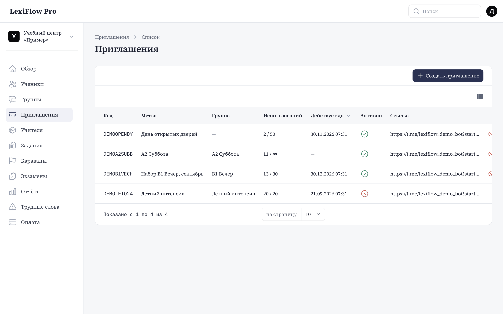
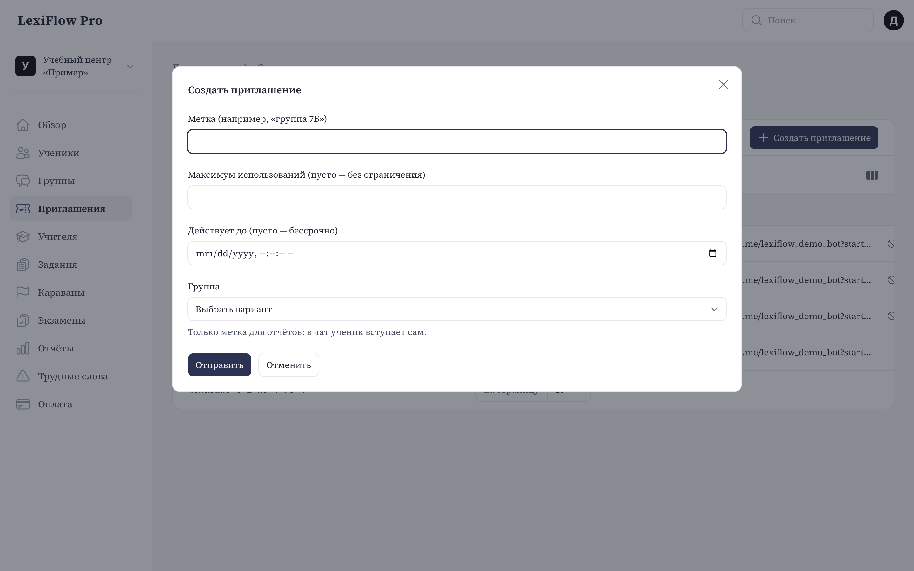

Код приглашения — это ссылка вида https://t.me/<бот>?start=org_<КОД>. Её удобно отправить в чат родителей, на сайт или раздать на уроке: каждый, кто откроет ссылку, сможет вступить в центр сам.
Кто имеет доступ: только владелец. У учителя раздела нет.


| Поле | Что задаёт |
|---|---|
| Метка | подпись для вас, например «группа 7Б» (до 64 символов) |
| Максимум использований | сколько учеников могут вступить по коду; пусто — без ограничения |
| Действует до | дата и время окончания; пусто — бессрочно |
| Группа | только метка для отчётов. В Telegram-группу ученик по этой ссылке не попадает — в чат он вступает сам |
Бот спросит: «Учебный центр «…» приглашает вас в LexiFlow. Вступить, чтобы получить Pro от центра?» — кнопки «Вступить» и «Не сейчас». Новый ученик сначала проходит короткое знакомство с ботом. После вступления бот ответит «Вы в центре «…». Pro активен» или, если мест нет, «…свободных мест пока нет. Сообщите администратору центра».
Если код отключён, истёк или исчерпан, бот попросит у администратора новую ссылку.
Кнопка «Отключить» (красный значок в конце строки) с подтверждением. По отключённому коду больше никто не вступит; уже вступившие остаются в центре.